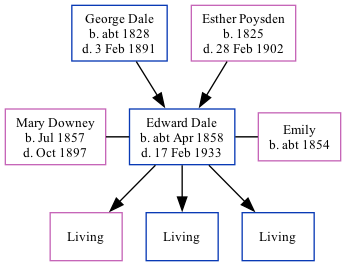

Edward Dale cApr 1858 - 1933
[ Home ] | [ Calendar ] | [ Surnames Index ] | [ Family History ]A coal porter and the child of George Dale (an agricultural laborer) and Esther Poysden (a servant), Edward Dale, the great-great-uncle of <a href="I1.html">Nigel Horne</a>, was born in Chartham, Kent, England <i>c.</i> Apr 1858<span class="citation">1,2,3,4,5,6,7</span>, was baptized there on Apr 19, 1858 was married twice - to Mary Downey (on Jun 5, 1877 in South Shields, Durham, England) Emily (<i>c.</i> 1900, following the death of Mary Jane in Oct 1897)<span class="citation">11</span>. He had 3 children with Mary Downey: Agnes, Leonard Arthur and Sidney Albert.</p><p>Edward spent all of his life in Kent, England. Throughout his life, he lived in several places around the county: in Chartham Hatch, Kent, England on Apr 7, 1861<span class="citation">13</span> and on Apr 2, 1871<span class="citation">14</span>; at Cottage, Milton, Gravesend on Apr 3, 1881<span class="citation">15</span>; in Milton, Gravesend in 1891<span class="citation">12</span>; on 29 Raphael Road, Milton, Gravesend on Mar 31, 1901<span class="citation">5</span> following the death of his wife in Oct 1897; and on 8 Norfolk Road, Gravesend on Apr 2, 1911<span class="citation">16</span>. <p>He died on Feb 17, 1933 at 14 Standen Street, Tunbridge Wells, Kent, England<span class="citation">8,9,10</span>.
Parents
- George was born c. 1828
- Esther was born in 1825
Citations
- 1861 England Census Online publication - Provo, UT, USA: The Generations Network, Inc., 2005.Original data - Census Returns of England and Wales, 1861. Kew, Surrey, England: The National Archives of the UK (TNA): Public Record Office (PRO), 1861. Data imaged from the National
- 1871 England Census Online publication - Provo, UT, USA: The Generations Network, Inc., 2004.Original data - Census Returns of England and Wales, 1871. Kew, Surrey, England: The National Archives of the UK (TNA): Public Record Office (PRO), 1871. Data imaged from the National
- 1881 England Census Online publication - Provo, UT, USA: The Generations Network, Inc., 2004. 1881 British Isles Census Index provided by The Church of Jesus Christ of Latter-day Saints © Copyright 1999 Intellectual Reserve, Inc. All rights reserved. All use is subject to the
- 1901 England Census Online publication - Provo, UT, USA: The Generations Network, Inc., 2005.Original data - Census Returns of England and Wales, 1901. Kew, Surrey, England: The National Archives of the UK (TNA): Public Record Office (PRO), 1901. Data imaged from the National
- 1901 England, Wales & Scotland Census - Findmypast (was age 43 and the head of the household)
- 1911 England Census Online publication - Provo, UT, USA: Ancestry.com Operations, Inc., 2011.Original data - Census Returns of England and Wales, 1911. Kew, Surrey, England: The National Archives of the UK (TNA), 1911. Data imaged from the National Archives, London, England.
- England & Wales, FreeBMD Birth Index, 1837-1915 Online publication - Provo, UT, USA: The Generations Network, Inc., 2006.Original data - General Register Office. England and Wales Civil Registration Indexes. London, England: General Register Office. © Crown copyright. Published by permission of the Cont
- England & Wales deaths 1837-2007 - Findmypast
- England & Wales, Death Index: 1984-2005 Online publication - Provo, UT, USA: The Generations Network, Inc., 2007.Original data - General Register Office. England and Wales Civil Registration Indexes. London, England: General Register Office. © Crown copyright. Published by permission of the Cont
- England & Wales, National Probate Calendar (Index of Wills and Administrations),1861-1941 Online publication - Provo, UT, USA: Ancestry.com Operations Inc, 2010.Original data - Principal Probate Registry. Calendar of the Grants of Probate and Letters of Administration made in the Probate Registries of the High Court of Justice in England. Londo
- Public Member Trees Online publication - Provo, UT, USA: The Generations Network, Inc., 2006.Original data - Family trees submitted by Ancestry members.Original data: Family trees submitted by Ancestry members.
- 1891 England Census Online publication - Provo, UT, USA: The Generations Network, Inc., 2005.Original data - Census Returns of England and Wales, 1891. Kew, Surrey, England: The National Archives of the UK (TNA): Public Record Office (PRO), 1891. Data imaged from The National
- 1861 England, Wales & Scotland Census - Findmypast (was age 3 and the son of the head of the household)
- 1871 England, Wales & Scotland Census - Findmypast (was age 13 and the son of the head of the household)
- 1881 England, Wales & Scotland Census - Findmypast (was age 23 and the head of the household)
- 1911 Census for England & Wales - Findmypast (was age 53 and the head of the household)
Media
1861 England, Wales & Scotland Census Transcription - GBC-1861-0003417886
1881 England, Wales & Scotland Census - GBC/1881/0004384987
Kent, Canterbury Archdeaconry Baptisms - GBPRS-CANT-B-96193264
Northumberland and Durham Marriages - GBPRS/M/356127309/1
England & Wales marriages 1837-2005 - BMD/M/1877/2/AZ/000066/092
Northumberland and Durham Marriages - GBPRS/M/356290054/1
England & Wales births 1837-2006 - BMD/B/1858/2/BH/000504/030
1911 Census for England & Wales - GBC/1911/RG14/03821/0107/1
1891 England, Wales & Scotland Census - GBC/1891/0005323438
1901 England, Wales & Scotland Census - GBC/1901/0005393502
England & Wales deaths 1837-2007 - BMD/D/1933/1/AZ/000288/114
England Births & Baptisms 1538-1975 - R_885421384
Family Tree
Generated by Ged2Site. Last updated on Jul 20, 2025